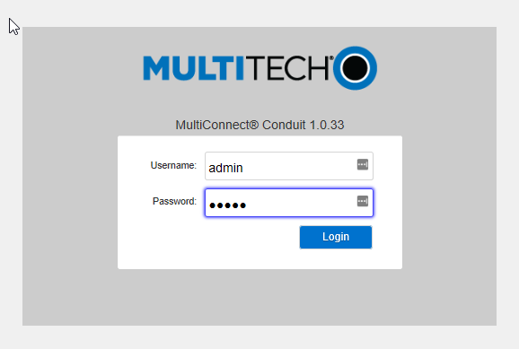
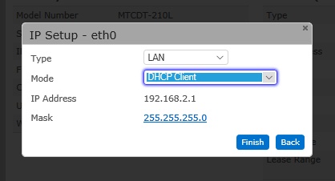
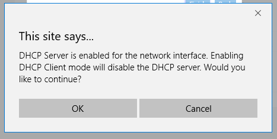
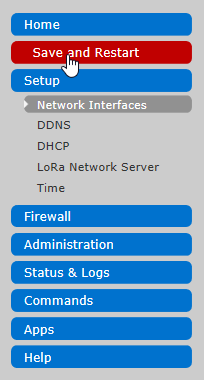
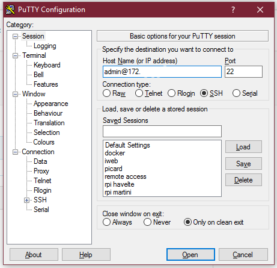

MultiTech Conduit
The MultiConnect® Conduit™ is a configurable, scalable cellular communications gateway for industrial IoT applications. Conduit allows users to plug in two MultiConnect mCard™ accessory cards supporting wired or wireless interfaces.
This guide will help you set up the gateway to communicate over The Things Network.
Prerequisites
-
MultiTech Conduit AEP or mLinux model.
There is no need to update any of the MultiTech software on the conduit.
-
MultiTech MTAC-LoRa LoRa accessory card, installed as instructed.
Do not forget to mount the antenna to the mCard after fitting it in the conduit.
- Computer with USB port and terminal software. Mac OS and Linux come with terminal software. For Windows you can use something like Putty.
- For the mLinux version you’ll need a USB stick.

Both this guide and the install script are a community effort led by our MultiTech ambassador Jac Kersing. The Things Network does not provide support for this gateway. For community support visit the MultiTech Gateway category on the forum.
Become an ambassador and help us support more devices! Drop us a line!
Configure AEP model
Login to web interface
To start configuring your conduit connect a computer to its LAN interface and open a browser to http://192.168.2.1/. This opens the login dialog for the configuration interface of the conduit:

The default credentials are:
- Username:
admin - Password:
admin
First-Time Setup Wizard
After login (be patient, it takes a while) the First-Time Setup Wizard opens:

Click Next to begin.
Choose Password
The first step it to change the current default password (admin):

Keep your new password in a safe place, you will have to reset to factory defaults if you lose it!
Time Configuration
Select your time zone and update both date and time if required.

Click Next to proceed.
Internet Configuration
Set the Mode to DHCP Client if you use DHCP on your network (most likely) or manually configure your internet connection. Click Finish once you are done.

If you changed the IP Address or selected DHCP a popup will appear warning you that the DHCP Server of the Conduit itself will be disabled. This is fine, so click OK to continue.

Update firmware
Before you continue, verify that the Conduit AEP runs Firmware 1.3.2 or later. This is display in the header of the web interface. If it is out-dated, follow the instructions to upgrade to the latest version. The ttn-packer-forwarder might not work otherwise.
Access & Network Configuration
As the LAN interfaces do not allow specifying a DNS server and we need DNS to work later on we will now change to network to WAN. However as this would lock us out we need to allow remote access for the management first.
Skip this step if you are using a cellular modem to connect the gateway to the internet. Just configure the cellular modem per instructions on the MultiTech website.
Access Configuration
In the left hand menu choose Administration followed by Access Configuration:

On the next screen tick the boxes marked yellow in the next screenshot:

When you select Via WAN under HTTPS a warning will appear. Just click Continue.

Once you have selected the 3 checkboxes, click Submit to save the changes.
Network Interfaces
Select Setup > Network Interfaces from the left menu:

In the next screen select the pencil in the eth0 row:

In the configuration popup change the Type from LAN to WAN.
If you use a static IP, fill out the gateway and DNS entries. Use 8.8.8.8 for Google’s public DNS if you do not have (or know) the local DNS server information.

Click Finish to save.
Now select Save and Restart from the menu:

You will be prompted to confirm the restart. Choose OK to proceed.
Disconnect the temporary network cable and connect the Conduit to the target network while it is restarting.
TTN Configuration
Once the Conduit has finished restarting and is connected to the target network, connect a computer to the same network and login to the Conduit.
If you have not configured your Conduit with a static IP, you will have to find out which IP the DHCP assigned to it.
-
For Windows use a terminal program like Putty to connect to
admin@<IP>:
You will get a security alert concerning the host key. Accept the new key with Yes.

-
For Linux/OSX open terminal and connect via
ssh admin@<IP>.
Download the installer by entering the next command:
wget https://github.com/kersing/multitech-installer/raw/master/installer.sh --no-check-certificate

Now run the installer and provide the prompted information. (Answer Yes to the first question, since we’ve already set up the conduit network etc in the previous steps.
sh installer.sh

Configure mLinux model
mLinux is an open source embedded Linux distribution for the MultiConnect Conduit and is the next generation version of CoreCDP.
Prepare USB stick
Find a USB stick and add the file installer.sh to it. If the USB is not recognized by the Conduit, please check whether it is FAT or FAT32 formatted
Connect
Wait to connect the power of the Conduit until we say so. ☝️
- Remove the panel with the MultiTech logo from the front of the Conduit by remove the single screw to the left of the logo.
- Use a Micro-USB cable between the connector you just uncovered and your computer.
- Insert the USB stick to USB port on the back of the conduit.
Windows
Use Windows Device Manager to look up the COM* for the Conduit, identified by * USB UART:

Start PuTTY, set the Connection type to: Serial, enter the COM port you found and set the Speed to 115200:

Mac OS / Linux
Run the following command in terminal to look up the USB connection:
ls /dev/tty.usb*
If that doesn’t work, try this instead and look for the value of IOSerialCalloutDevice.
ioreg -c IOSerialBSDClient | grep usb
Now connect to the USB device using 115200 for speed. For example:
screen /dev/cu.usbserial 115200
Login via terminal
Connect the Conduit’s power cable. You will now see its boot messages. Wait for the login prompt to appear:

The default credentials are:
- Username:
root - Password:
root
Copy installer
To get the installer we need mount the USB drive:
mount /dev/sda1 /mnt
Copy the installer to the conduit:
cp /mnt/installer* /home/root
Tell Linux to release the USB drive:
umount /mnt
During the download to the USB stick the
installer.shfile might have been renamed toinstaller.txtorinstaller.sh.txt. If that happened, just useinstaller.txtorinstaller.sh.txtwhenever the instructions sayinstaller.sh.
Network Setup
Start the installer:
sh installer.sh
The installer will prompt you for information it requires to configure the Conduit:
- A new password to secure access to the conduit.
- Your time zone.
- Network Setup.

Once it is done, hit the enter button to shutdown and wait for the led to stop blinking.
Reconnect
Once the led has stopped blinking you can remove the power cable, USB drive, the Micro-USB cable and replace the front panel.
Now use an ethernet cable to connect the Conduit to the target network and reconnect the power cable. Wait for the conduit to finish booting (the heartbeat led starts blinking), connect a computer to the same network and login to the Conduit.
If you have not configured your Conduit with a static IP, you will have to find out which IP the DHCP assigned to it. You can also find the IP address by reconnecting the Conduit with the Micro-USB Cable. Log in with your Username and Password and type
ifconfig. Look foreth0. The number that comes afterinet addris the IP address.
-
For Windows use a terminal program like Putty to connect to
<IP>:
You will get a security alert concerning the host key. Accept the new key with Yes.
-
For Linux/OSX open terminal and connect via
ssh <IP>.
Login as user root with the password you set via the installer.

TTN Configuration
Now restart the installer and provide the required answers when prompted:
sh installer.sh

The installation is complete once the Starting ttn-packet-forwarder: OK message appears.
Check the output of the packet forwarder for any errors:
tail /var/log/lora-pkt-fwd.log
The installation was successful if the output looks something like:
##### 2016-08-06 23:19:11 GMT #####
### [UPSTREAM] ###
# RF packets received by concentrator: 1
# CRC_OK: 100.00%, CRC_FAIL: 0.00%, NO_CRC: 0.00%
# RF packets forwarded: 1 (19 bytes)
# PUSH_DATA datagrams sent: 2 (461 bytes)
# PUSH_DATA acknowledged: 100.00%
### [DOWNSTREAM] ###
# PULL_DATA sent: 3 (100.00% acknowledged)
# PULL_RESP(onse) datagrams received: 0 (0 bytes)
# RF packets sent to concentrator: 0 (0 bytes)
# TX errors: 0
### [GPS] ###
# Invalid gps time reference (age: 1470525551 sec)
# Manual GPS coordinates: latitude 53.18977, longitude 6.55738, altitude 5 m
##### END #####
INFO: [up] PUSH_ACK for server router.eu.thethings.network received in 13 ms
INFO: [down] for server router.eu.thethings.network PULL_ACK received in 13 ms
Register with TTN
Although at this point the gateway does work and is connected to The Things Network, you still have one step to go.
-
Still logged into the Conduit, get the EUI and other information about your Gateway:
cat /var/config/lora/local_conf.json -
Register your gateway using the above information.
👏 Your gateway is now connected to The Things Network!